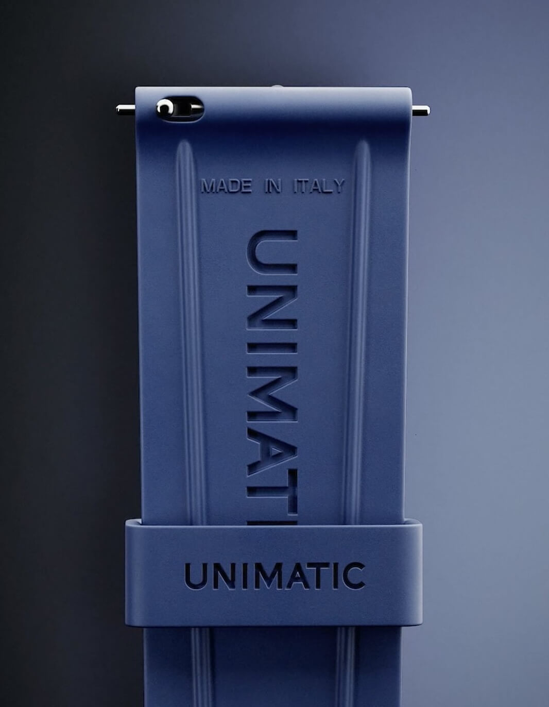
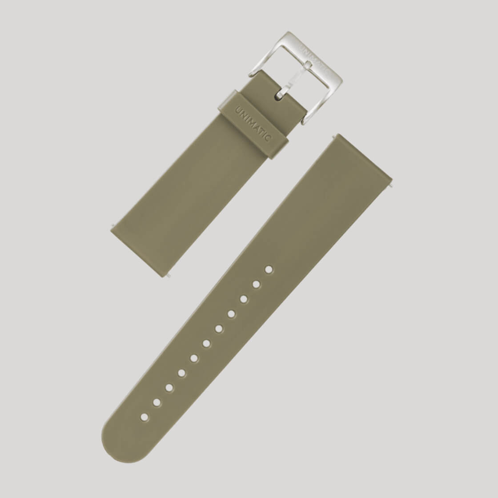
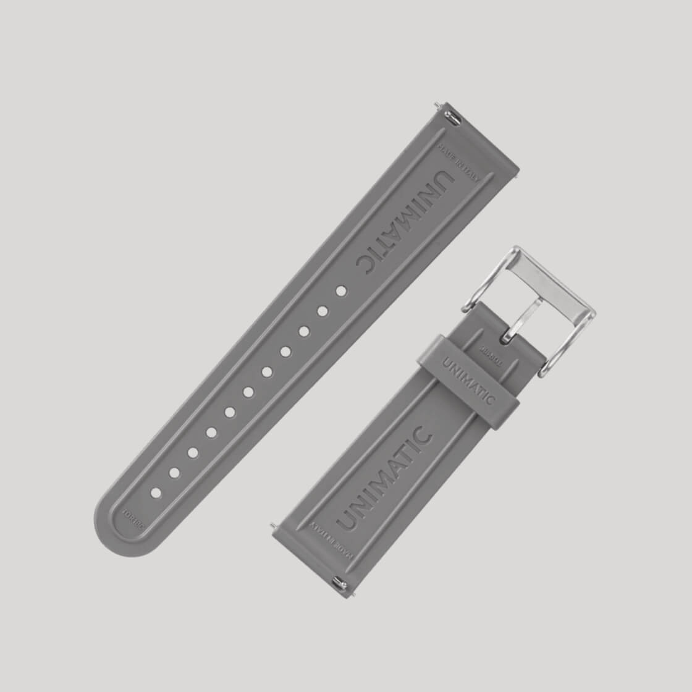

For all Unimatic fans there is exciting news on the strap front. The Italian microbrand has just introduced a new range of tapered rubber straps. This is a small but significant upgrade that many core Unimatic fans have been hoping for.
Nenad Pantelic • October 7, 2024

For the longest time Unimatic's rubber strap offerings were primarily straight 22mm to 22mm TPU options. For sure these non-tapered straps are undeniably tough and match the brand's utilitarian aesthetic, but they also wear a bit large. Only those with larger wrists could comfortably wear their Unimatics with the previous straight 22mm strap.
This is where the new announcement comes. Unimatic has now introduced TPU rubber straps that taper from 22mm at the lugs down to 20mm at the buckle.
This seemingly minor adjustment makes a big difference in how the watch wears. A tapered strap conforms better to the wrist, reducing bulk and improving overall comfort, especially for those with average or smaller wrist sizes. Now more Unimatic fans can enjoy a more ergonomic and comfortable wearing experience.
Here are the official specifications:
| Material | TPU Rubber (Thermoplastic Polyurethane) |
| Finish | Matte with an embossed Unimatic logo |
| Strap Length | 122mm + 69mm |
| Lug Widths | Universal 22mm width to fit all Unimatic watches |
| Attachment System | Quick-release spring bars |
| Keepers | A single "flying" keeper |
| Thickness | 4mm to 3mm |
| Buckle | Signed Stainless Steel |
| Buckle finish | Brushed or DLC Stainless Steel |
| Colors | Black, navy blue, brown, grey, green |
I think that this move by Unimatic is more than just a new product release; it's a nod to the community. It shows an evolution and a refinement the brand is willing to take. This reflects a long-term commitment from Unimatic, a trajectory that many passionate fans will appreciate.
On a personal note, I am particularly happy about this release. For daily wear, casual outings, and pretty much any non-office occasion, I prefer rubber straps. In my opinion they require less break-in time than leather, they are more durable, and they are completely unaffected by water or sweat.
With three Unimatics already in my collection, I am genuinely excited to get my hands on these new quick-release TPU tapered straps and see the difference they make to how my watches wear.


Priced at €65 (excluding tax), these new tapered rubber straps are a nice way to refresh your Unimatics. They are only €5 more expensive than the non-tapered options, a fair price especially since the new ones have quick release spring bars.
If you have been on the fence about a Unimatic due to comfort concerns with the previous strap style, or if you are just looking for a great new strap option, these are definitely worth checking out.